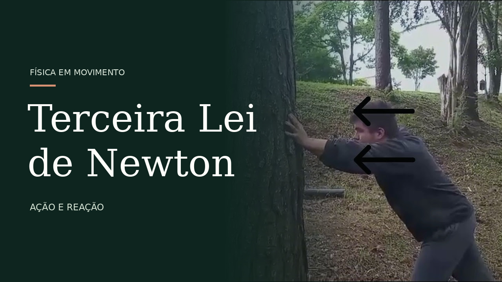

Lei do movimento · 03
Ação e reação
A terceira lei mostra que as forças surgem nas interações: elas aparecem em pares e atuam em corpos diferentes.
Se um corpo A exerce uma força sobre um corpo B, B exerce sobre A uma força de mesma intensidade e direção, mas de sentido oposto.
Demonstração prática
Vídeo da experiência

Clique na capa para assistir. Se o player não carregar, use o botão abaixo. A reprodução exige conexão com a internet.
Simulação interativa
Forças em pares
Altere as massas e observe forças iguais atuando em corpos diferentes.
Corpo A:
Corpo B:
As acelerações podem ser diferentes porque as massas são diferentes.
O que isso significa?
As forças de ação e reação têm a mesma intensidade, mas não se anulam, pois cada uma atua em um corpo diferente. Elas acontecem simultaneamente durante a interação.
Um exemplo cotidiano
Ao caminhar, o pé empurra o chão para trás. O chão exerce uma força para a frente sobre o pé, ajudando a impulsionar o corpo.